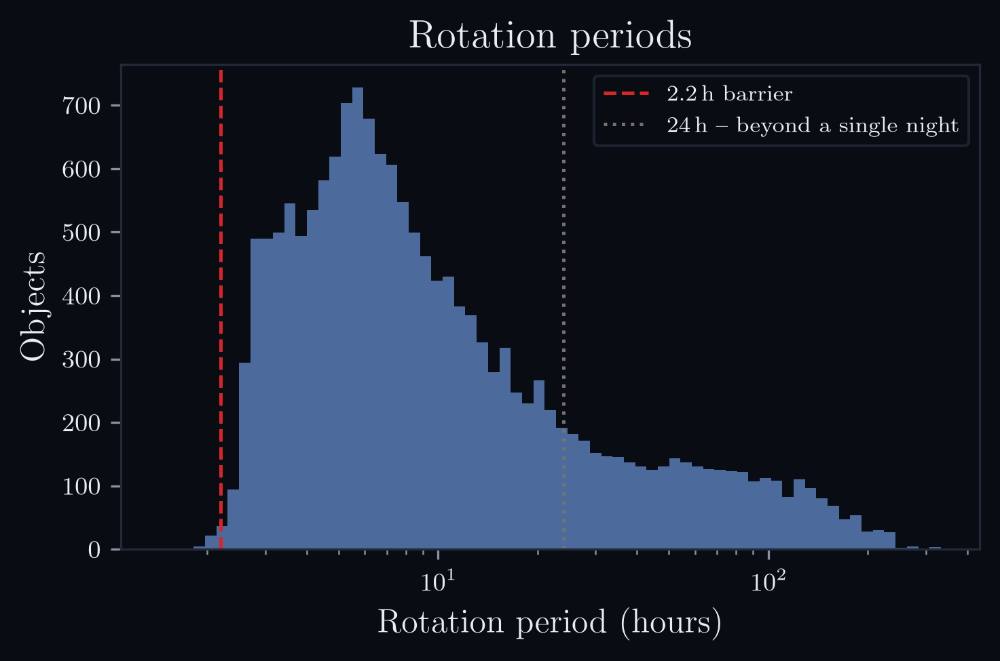
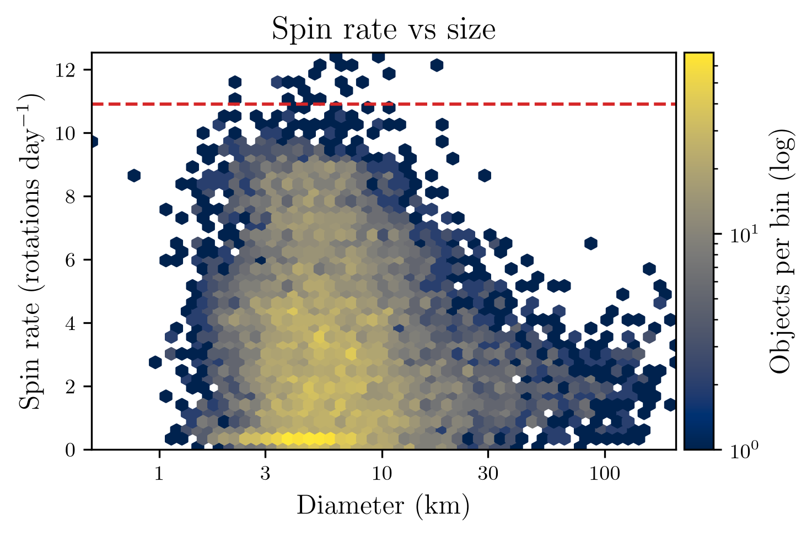
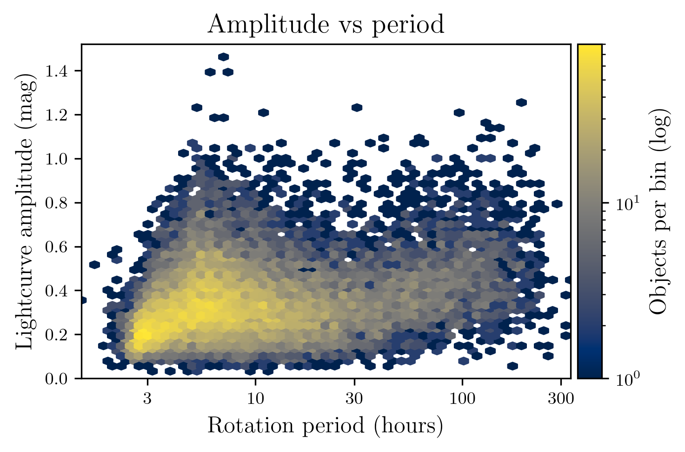
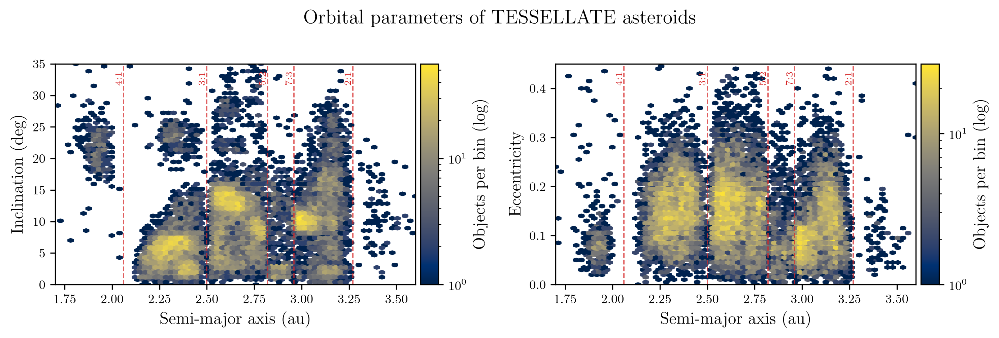

TESS sectors 27–55 · TESSELLATE
Asteroid rotation catalog
Rotation periods, phase-folded lightcurves and convex shape models for
asteroids observed by TESS. Because TESS watches the same field continuously for about a
month, these lightcurves run unbroken for weeks — reaching slow rotators that a single
night cannot close, and pinning periods across hundreds of consecutive rotations.
12,068
with no previously published period
3,287
longer than 24 hours
46 days
median observing baseline
1,384
median measurements each
Search the catalog
Type a name or number for a quick look, or open one at random. Every object
has a page: 14,764 carry a convex shape model, and 1,663 have a period
and folded lightcurve but no model, each stating why.
| Object |
Period (hours) |
Amplitude |
Diameter (km) |
Type |
Symmetry |
LCDB (hours) |
Browse the full
catalog → — all 16,427 objects, with filters and sorting.
The population

Rotation periods. 3,287 objects turn more slowly than once a day,
the regime ground-based photometry struggles to close.

Spin rate against size. The 2.2 hour barrier is where a loosely bound rubble pile
would fly apart; almost nothing sits above it.

Amplitude against period. Larger amplitude means a more elongated body, since
a rounder one varies less as it turns.

Where these asteroids orbit. The dashed lines are Jupiter mean-motion
resonances, which clear the Kirkwood gaps; clumps are collisional families. The catalog
samples the inner, middle and outer belt about equally.
What you can download
Each object page carries its phase-folded lightcurve with per-bin
uncertainties, the full stacked photometry behind it, and a rotatable convex shape model
— all downloadable, and the shape model is synchronised to the lightcurve so you can
watch which face produces which feature.
Reading a shape model. Most of these asteroids were seen during a single
apparition, from one direction. That constrains the shape but not its orientation in space,
so the spin axis is assumed rather than measured and every page says so. Convex inversion
also cannot represent concavities, so models systematically under-reach the deepest minima.
The rotation periods, by contrast, are well determined.